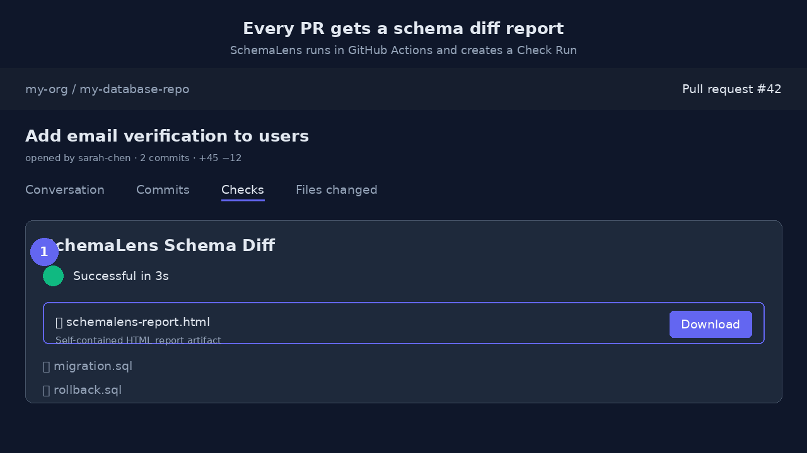

Stop reviewing database changes in plain text. Generate a visual, shareable schema diff report with migration SQL, rollback SQL, breaking changes, and a migration safety score.

A schema diff report is a structured summary of the differences between two database schemas. Instead of comparing CREATE TABLE dumps by hand, you get a clear view of what changed, why it matters, and the SQL needed to apply or reverse the change.
SchemaLens generates these reports in your browser or automatically in CI/CD. Every report includes a visual summary, a risk score, a list of breaking changes, and ready-to-run migration and rollback SQL.
Tables added, removed, and modified at a glance, plus columns, indexes, constraints, triggers, views, and functions.
A 0–100 risk score so reviewers instantly know if a change needs extra care before merging.
Destructive changes like dropped columns, type shrinks, and removed constraints are flagged with severity.
Ready-to-run ALTER TABLE scripts in PostgreSQL, MySQL, SQLite, SQL Server, or Oracle dialects.
The inverse migration script to revert every change if something goes wrong in production.
Repo, branch, commit, PR, and CI run metadata embedded automatically in CI/CD reports.
Add the SchemaLens GitHub Action to generate a schema diff report on every pull request. The report is uploaded as a self-contained HTML artifact and linked in the PR comment, Check Run, and job summary.
No license key is required for the free tier. Set upload-report: true and your team gets a downloadable report for every schema change.
Individual developers can generate unlimited schema diff reports in the browser for free. Teams can upgrade to SchemaLens Team for shared drift alerts, a persisted dashboard, admin controls, and workspace-level reporting.
Browser-based schema diff reports, migration SQL, rollback SQL, and breaking change detection. No signup.
Shared drift alert dashboard, 90-day report history, Slack/Teams notifications, and centralized workspace settings.
A schema diff report is a structured summary of the differences between two database schemas. It shows added, removed, and modified tables, columns, indexes, and constraints, plus breaking changes, migration SQL, rollback SQL, and a risk score.
No. You can paste two CREATE TABLE dumps into the SchemaLens web app and get a report instantly. For CI/CD, add the SchemaLens GitHub Action, GitLab CI template, or other pipeline integration.
PostgreSQL, MySQL, SQLite, SQL Server, and Oracle. The report dialect matches your schema files.
Yes. The CI/CD report artifact is a single self-contained HTML file with inline CSS and JavaScript. Download it, email it, or attach it to a ticket — it works without an internet connection.